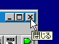
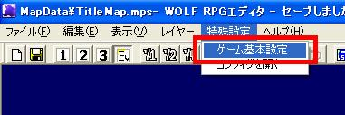
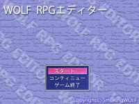
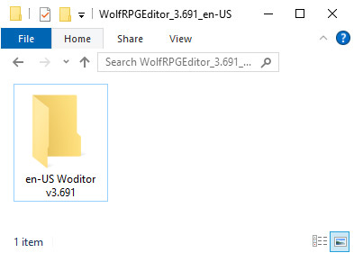

Essential Knowledge
The core lessons every WOLF RPG Editor beginner should start with, from installing the editor to creating events, maps, common events and variables.

Installing WOLF RPG Editor
Download and extract WOLF RPG Editor, then run the Sample Game, and open the Editor.
View lesson❯
Switching the map you’re editing
Open "Sample Map A" from the Sample Game and display it in the main editor window.
View lesson❯
Creating your first event
Create a new chicken event in the Sample Game's "Sample Map A" that says "Cock-a-doodle-doo♪" when the player talks to it.
View lesson❯
Creating a new map
Create a new map called "Test" (with the filename test.mps), then draw the letters "RPG" using grass tiles as explained below, and save the map.
View lesson❯
Moving the player to another map
Create an invisible event next to the barrel in Sample Map A that transfers the player to Sample Map B when touched.
View lesson❯
Changing the game's starting position
Change the game's starting position so the player appears in front of the Professor on "Sample Map A". In the Sample Game, the player starts from the Title map. This tutorial shows how to change the starting location.
View lesson❯
Removing the Sample Data
Replace the current data with a blank dataset that does not include the sample game.
Being translated
Understanding the "Title" map
In the sample data, the "0: Title" map contains exactly one event called "Title Event". This page explains what that event does.
Being translated
Setting the game title
Set the title displayed in the game window.
Being translated
Changing the title image (Sample Game only)
Change the title image of the WOLF RPG Editor sample game to a different image.
Being translated
Creating a new Common Event
Create a new Common Event and call it from a map event.
View lesson❯
Working with Variables
Understand the different types of variables used in WOLF RPG Editor and give them meaningful names.
View lesson❯